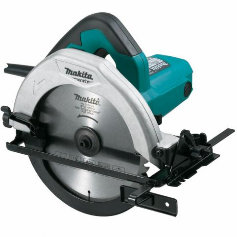

La sierra circular se utiliza generalmente para realizar cortes rectos, de una forma rápida y segura. Dadas sus características son muy útiles para realizar cortes largos en materiales con un grosor elevado.
